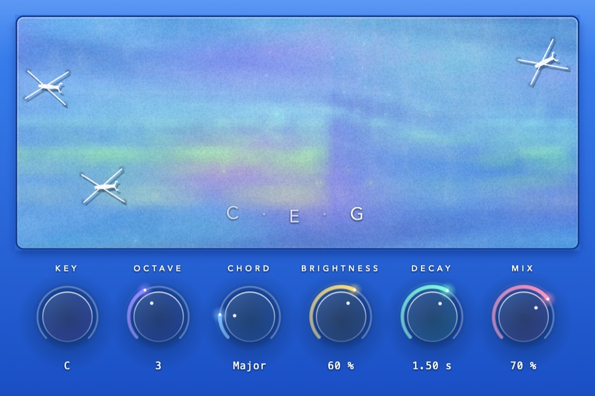
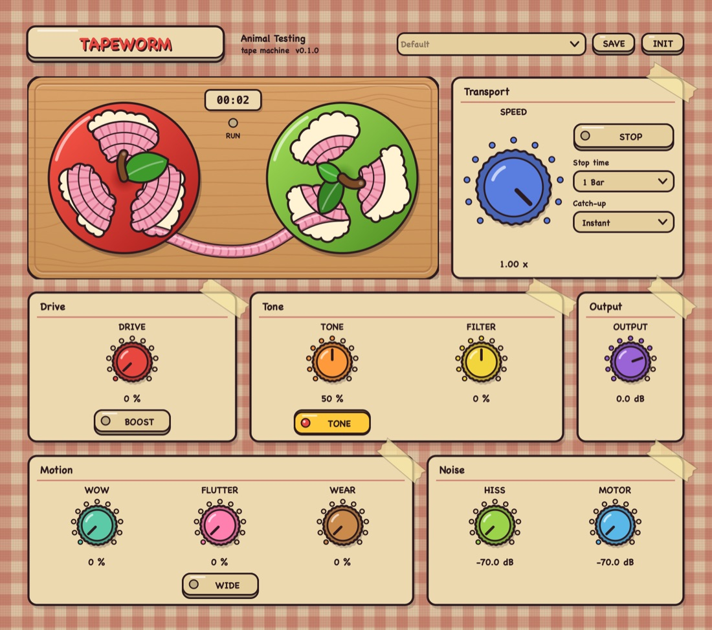
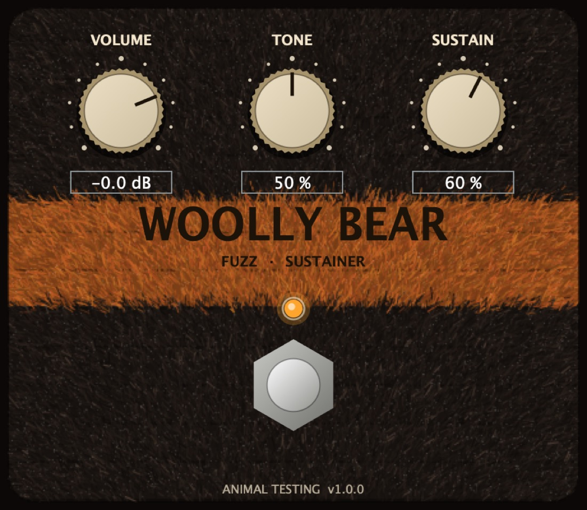
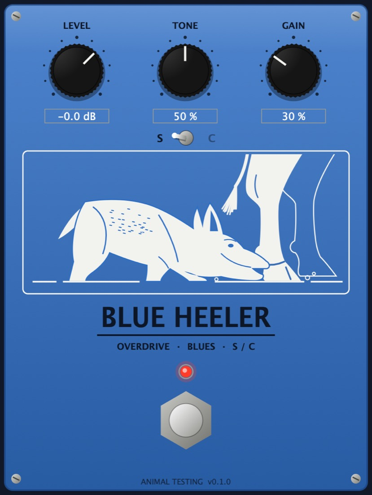
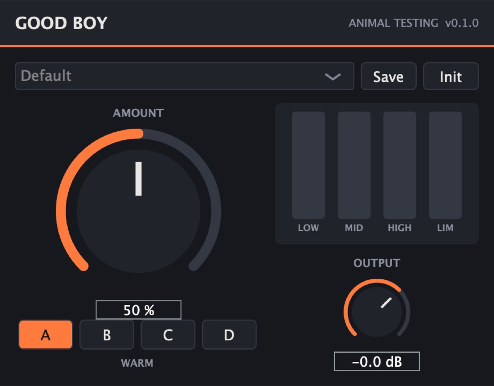
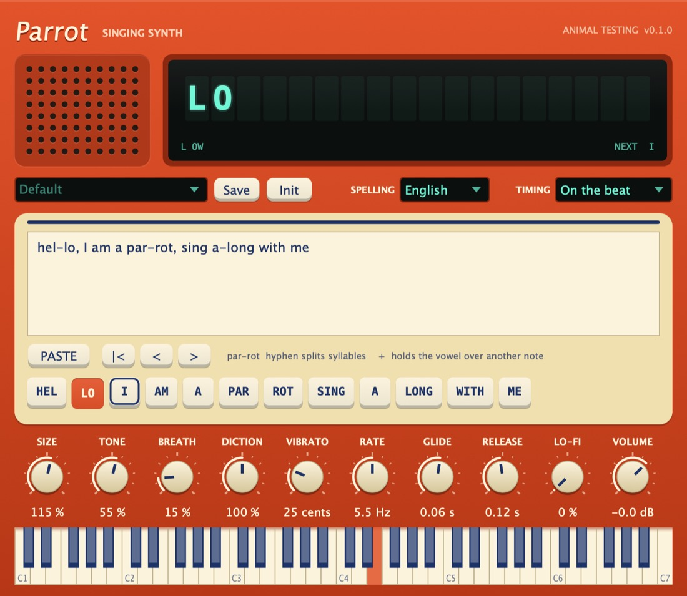

WaterfallEffect · Chord resonator

Comb filter resonator modelled on the SP‑404’s. Named after TAGABOW’s ‘behind the waterfall’.
- Key, Octave from C-1 to G9, and Chord
- Brightness, Decay and Mix
Free VSTs we built, inspired by the gear we use
Universal: Apple silicon and Intel
64-bit

Comb filter resonator modelled on the SP‑404’s. Named after TAGABOW’s ‘behind the waterfall’.

Worn tape emulator with speed controls: slow the tape itself down to a quarter of real time, live.

Modelled on the Ibanez SC10 Super Stereo Chorus. Inspired by Blue Smiley.

Modelled on the Russian green muff.

Low-gain blues overdrive with two cascaded clipping stages.

Reverse reverb and delay inspired by the RV-7.

One-knob multiband maximizer. Based on a certain DAW’s signature effect.

Literally just a notepad.

Type the words, play the notes, and it sings them back.
Nothing in this group.
Get the zip for your system from the latest release. Each zip holds every plugin as VST3, AU (macOS) and a Standalone app.
| Format | macOS | Windows |
|---|---|---|
| VST3 | ~/Library/Audio/Plug-Ins/VST3/ | C:\Program Files\Common Files\VST3\ |
| AU | ~/Library/Audio/Plug-Ins/Components/ | n/a |
In Ableton Live, open Settings → Plug-Ins, turn on the VST3 system folders (and Audio Units on a Mac), then click Rescan. They show up under Plug-Ins → Animal Testing.
The Mac builds aren't notarized yet. If macOS says a plugin is damaged, clear the download flag in Terminal:
xattr -dr com.apple.quarantine ~/Library/Audio/Plug-Ins/VST3/AT* ~/Library/Audio/Plug-Ins/Components/AT*